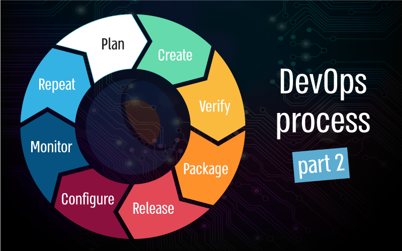

| Sekolah DevOps Cilsy 2 | HOME HOW WORKS SERVICE SCHEDULE CONTACT US |
|
How DevOps Works Cara Kerja DevOps Efsiensi yang ditimbulkan oleh DevOps membantu menciptakan kondisi dimana tim Developer menjadi memiliki waktu yang lebih untuk bekerja, untuk melakukan riset maupun mengembangkan produknya dibanding disibukkan dengan masalah deployment. Mari kita bahas beberapa cara kerja DevOps untuk melihat bagaimana hal ini dapat terjadi. Prinsip utama dari cara kerja DevOps adalah Continuous Everything. Artinya dalam setiap proses pekerjaannya harus selalu menanamkan mindset bahwa tidak ada proses yang hanya 1x dikerjakan lalu selesai, melainkan apapun harus tetap berjalan dengan baik secara terus menerus |
 |
|
CI/CD Continuous Everything Continuous Integration Continuous Deployment Continuous Delivery Continuous Improvement Continuous Value for Customer |